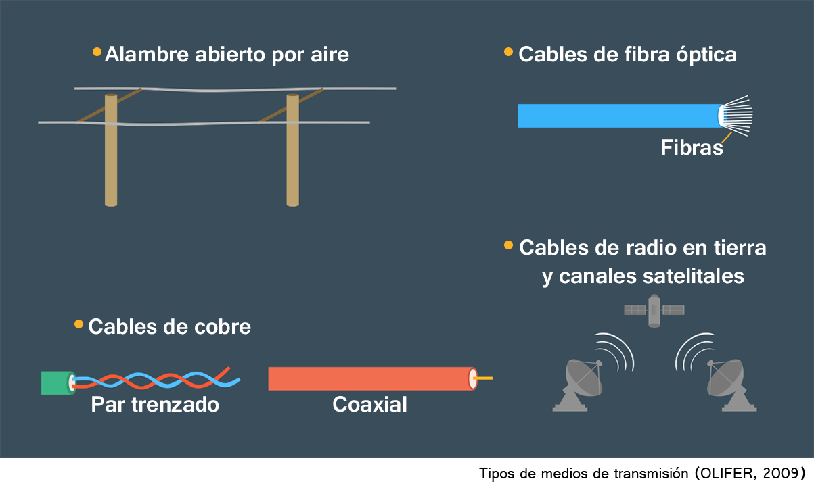

Las redes de computadoras aparecieron a finales de los años de 1960 y han heredado un gran número de
propiedades útiles de sus predecesores, las viejas y ampliamente difundidas redes telefónicas. Esto no es una
sorpresa, ya que tanto los teléfonos como las computadoras son instrumentos universales de comunicación. Sin
embargo, las redes de computadoras han aportado algo novedoso al mundo de las comunicaciones: han conseguido
almacenar la inagotable información acumulada por la civilización humana en el transcurso de sus varios miles
de años de existencia. Este almacenamiento de información continua y crece de manera constante. Lo anterior
fue particularmente notable a mediados de la década de 1990, cuando el rápido crecimiento de Internet demostró
claramente que el acceso libre y anónimo a la información y las comunicaciones instantáneas y por escrito era
de gran valor para la mayoría de las personas.
En la primera unidad abordaremos el desarrollo histórico de las redes con el propósito de identificar la
importancia que han desempeñado éstas en el desarrollo de la humanidad. Se revisarán los componentes, medios,
protocolos de comunicación, así como la clasificación y los diferentes tipos de redes que existen.
Objetivo
de unidad
Identificar los conceptos generales y la clasificación de las redes a fin de distinguir el funcionamiento de
sus componentes, los medios de transmisión y sus topologías.
Organizador gráfico de unidad
Situación problemática
La influencia de las redes de computadoras en otros tipos de redes dio como resultado la convergencia de
redes, un proceso que comenzó mucho antes que Internet. La transmisión de voz digital a través de las redes
telefónicas fue uno de los primeros indicios de dicha convergencia. Indicios más recientes de ésta son
constituidos por el desarrollo activo de nuevos servicios en redes de computadoras que eran privativos de las
redes telefónicas, de radio y de televisión, como voz sobre IP (VoIP), transmisiones por radio y servicios de
televisión. El proceso de convergencia es continuo y el conocimiento de la evolución de las redes de
computadoras permite comprender de manera más sencilla los principales problemas a los que se deben enfrentar
los diseñadores de las redes de computadoras.
1.1 Antecedentes Históricos.
Las redes de computadoras no son el único tipo de redes que la civilización humana haya creado. Es posible
que el ejemplo más antiguo de una red que haya abarcado grandes territorios y ofrecido servicios a múltiples
clientes haya sido el sistema de suministro de agua en la antigua Roma. Pero, sin importar que tan distantes y
diversas en su naturaleza puedan ser las redes, todas tienen algo en común; se pueden establecer analogías
claras entre los componentes de las redes eléctricas y los de cualquier red de computadoras de gran tamaño. Es
decir, los recursos de información que se encuentran en las redes de computadoras corresponden a las plantas
de energía eléctrica; los enlaces de comunicación de las redes de computadoras son análogos a las líneas de
transmisión de alta tensión y las redes de acceso son parecidas a las estaciones de transformación. Por
último, tanto en las redes de computadoras como en las eléctricas se puede observar que cuentan con terminales
para los clientes: estaciones de trabajo del usuario final en el caso de las redes de computadoras y aparatos
eléctricos domestico en el caso de las redes eléctricas.
Las redes de computadoras, también conocidas como redes de comunicación de datos o de transmisión de datos,
representan el resultado lógico de la evolución de dos de las ramas científicas y tecnológicas más importantes
de la civilización moderna: las tecnologías de las computadoras y de las telecomunicaciones.
Figura 1. Evolución de las redes de computadoras en la interfase entre las tecnologías de la
Computación y de las telecomunicaciones. (OLIFER, 2009)
Por un lado (Figura 1), las redes de computadoras representan un caso particular de sistemas de cómputo
distribuido en los que un grupo de computadoras trabajan de manera coordinada para realizar una serie de
tareas interrelacionadas mediante el intercambio de datos de manera automática. Las redes de computadoras
también pueden considerarse como un medio para transmitir información a larga distancia. Para hacer lo
anterior, las redes de computadoras implementan varios métodos para codificar y multiplexar datos, los cuales
han sido adoptados ampliamente por los sistemas de telecomunicaciones.
Sistemas de procesamiento por lotes
En primera instancia, consideraremos los orígenes de las redes de computadoras. Las computadoras de la década
de 1950 —enormes, voluminosas y caras— se diseñaron para un pequeño número de usuarios privilegiados. Con
mucha frecuencia, estos monstruosos equipos ocupaban edificios completos. Dichas computadoras no podían
prestar servicio a los usuarios de manera interactiva, por lo que primero formaban lotes de tareas y después
entregaban los resultados.
Los sistemas de procesamiento por lotes estaban basados primordialmente en mainframes y constituían
computadoras universales poderosas y confiables. Los usuarios preparaban tarjetas perforadas que contenían
datos y códigos de programa y después transferían estas tarjetas al centro de cómputo. Los operadores
insertaban estas tarjetas a la computadora y los usuarios obtenían los resultados un día después en forma
impresa (Figura 2). Por tanto, una sola tarjeta perforada que tuviera un error podría significar un retraso de
al menos 24 horas.
Figura 2.
Como era obvio, desde el punto de vista del usuario final, sería más conveniente contar con un modo de
operación interactivo que les permitiera manejar el procesamiento de sus datos de una sola vez desde la
terminal. Los intereses de los usuarios finales fueron omitidos totalmente en las primeras etapas de la
evolución de los sistemas de computadoras. La eficiencia del desempeño del componente más costoso de una
computadora —el procesador— se considero de fundamental importancia, aun a costa de la productividad del
usuario.
Sistemas multiterminales: prototipo de una red de computadoras
A medida que los procesadores se abarataron a principios de la década de 1960, aparecieron nuevos métodos
para diseñar el procesamiento en las computadoras. Dichos métodos vislumbraron la posibilidad de tener en
cuenta la conveniencia del usuario final. Por tanto, los sistemas multiterminales evolucionaron (Figura 3). En
sistemas de tiempo compartido, es decir, la computadora estaba a disposición de varios usuarios, quienes
tenían sus propias terminales, desde donde podían comunicarse con la computadora. El tiempo de respuesta del
sistema de cómputo era lo suficientemente corto para ocultar que la computadora daba servicios a múltiples
usuarios en paralelo.
Las terminales podían instalarse fuera de los centros de cómputo y sobre los escritorios de todas las
empresas. A pesar de que el poder de procesamiento se conservaba totalmente centralizado, algunas funciones se
distribuyeron, como la entrada y salida de datos. Dichos sistemas multiterminales centralizados tenían una
apariencia similar a las Redes de Área Local (LAN, por sus siglas en ingles). Los usuarios finales percibían
el funcionamiento en una terminal prácticamente de la misma manera que en la actualidad la mayoría de la gente
percibe el funcionamiento de una PC conectada a una red. El usuario podía acceder a los archivos y
dispositivos periféricos compartidos y tener la impresión de usar la computadora de manera exclusiva, pues el
usuario podía iniciar cualquier programa que deseara en cualquier momento y recibir los resultados casi de
forma inmediata. (Algunos usuarios estaban convencidos de que las operaciones matemáticas se llevaban a cabo
en alguna parte dentro de la pantalla de la computadora.)
Figura 3. Sistema multiterminal como prototipo de una red de computadoras. (OLIFER, 2009)
Los sistemas multiterminales, los cuales trabajaban en modo de tiempo compartido, fueron el primer paso en el
desarrollo de las LAN.
Sin embargo, la evolución aún tuvo que recorrer un largo camino antes de que aparecieran las LAN, ya que los
sistemas multiterminales conservaron las características esenciales del procesamiento centralizado de datos, a
pesar de su somero parecido con los sistemas distribuidos.
Los corporativos consideraban que no había una necesidad imperiosa de las LAN. En un solo edificio no había
nada que conectar como para utilizar una red. La mayoría de las empresas no podía darse el lujo de comprar más
de una computadora. Durante ese periodo, la famosa ley de Grosch (nombrada así en honor a Herbert Grosch) fue
universalmente valida y representaba, de manera empírica, el nivel tecnológico de ese entonces. De acuerdo con
esta ley, el costo de un sistema de cómputo se elevaba en función de la raíz cuadrada del poder computacional
del sistema. De aquí que era económicamente más provechoso comprar una maquina poderosa que dos menos
poderosas, porque su poder computacional total resultaba significativamente menor que el de la maquina más
costosa.
1.2 Importancia de las redes.
A principios de la década de 1970 se llevó a cabo un evento que ha tenido la mayor influencia en la evolución
de las redes de computadoras. Como resultado de los avances tecnológicos en el campo de la fabricación de
componentes para computadora, aparecieron circuitos integrados de gran escala (dispositivos LSI).
Estos dispositivos estaban caracterizados por un costo relativamente bajo, así como por funciones avanzadas.
Lo anterior llevo al desarrollo de minicomputadoras, las cuales se convirtieron en los verdaderos competidores
de los mainframes. La ley de Grosch dejo de ser válida, pues una docena de minicomputadoras que tuvieran el
mismo costo que un mainframe podía efectuar algunas tareas (especialmente las que podían realizarse en
paralelo) mucho más rápido.
A partir de ese momento, aun pequeñas compañías pudieron darse el lujo de tener sus computadoras. Las
minicomputadoras podían llevar a cabo tareas como el control de equipo técnico y la administración de las
existencias en dichas compañías. Esto represento el origen del concepto de cómputo distribuido, en el que los
recursos de cómputo estaban distribuidos por toda la compañía, sin embargo, todas las computadoras en la misma
organización continuaron trabajando en forma independiente (figura 4).
A medida que transcurrió el tiempo, las necesidades de los usuarios evolucionaron. Los usuarios finales ya no
estaban satisfechos del trabajo aislado en una computadora independiente, por ejemplo: necesitaban
intercambiar datos de computadora (a menudo, de manera automática) con los usuarios de sus demás sucursales y
oficinas. Con el fin de satisfacer estas necesidades, aparecieron las primeras LAN (Figura 5).
Al principio se utilizaron tecnologías no estándares para la interconectividad de redes con el fin de
conectar computadoras a la red.
Figura 4. Operación independiente de varias minicomputadoras ubicadas en la misma empresa.
(OLIFER, 2009) Figura 5. Tipos de enlaces en las primeras LAN. (OLIFER, 2009)
Las redes de computadoras no solo son el resultado lógico de la evolución de las tecnologías de la
computación y de las telecomunicaciones, también representan un caso particular de sistemas de cómputo
distribuido y pueden considerarse un medio para transmitir información a través de distancias considerables.
Para este último propósito, las redes de computadoras implementan métodos de codificación y multiplexaje de
datos desarrollados y adoptados en varios sistemas de comunicación.
Tabla 1. Cronología de los eventos más significativos en la historia de las redes de computadoras.
(OLIFER, 2009)
1.3 Componentes de una red.
La tecnología de redes es un conjunto coordinado de software y hardware (por ejemplo, servidores,
computadoras personales, controladores, adaptadores de red, cables y conectores) y mecanismos para la
transmisión de datos a través de enlaces de comunicación, suficientes para construir una red de computadoras.
Las LAN representan grupos de computadoras concentradas en una región relativamente pequeña, por lo general
dentro de un radio que no excede de 2.5 kilómetros, aunque las LAN pueden extenderse para abarcar áreas
mayores (docenas de kilómetros). En general, las LAN representan un sistema de comunicación que pertenece a
una sola organización.
A mediados de la década de 1980, la situación comenzó a cambiar en forma radical. Las tecnologías estándar
para conectar computadoras a la red, como Ethernet, Arcnet, Token Ring y poco después FDDI, se establecieron
permanentemente.
La adopción de las computadoras personales representó un incentivo muy poderoso para el desarrollo de estas
tecnologías. Las PC se convirtieron en elementos ideales en la construcción de redes: por un lado, eran lo
suficientemente poderosas para soportar software para la conectividad de redes; por otro, era obvio que
necesitaban conectar sus capacidades de procesamiento con el fin de resolver tareas complejas y compartir
dispositivos periféricos costosos y arreglos de discos. Debido a lo anterior, las PC prevalecieron en las LAN
no solo jugando el rol de clientes, sino también llevando a cabo funciones de almacenamiento de datos y de
central de procesamiento (es decir, convirtiéndose en servidores de red). A medida que las PC fueron más
populares, absorbieron las funciones que normalmente realizaban las minicomputadoras y las mainframes.
Todas las tecnologías estándares de LAN estaban basadas en el mismo principio de conmutación que era muy
exitoso cuando se transmitía tráfico a través de las WAN, es decir, el principio de la conmutación de
paquetes.
El proceso para diseñar LAN pasó de ser de un trabajo artesanal a un procedimiento estándar mediante el uso
de tecnologías para la conectividad de redes. Para construir una red, era suficiente comprar un cable estándar
y adaptadores de red de acuerdo con la especificación requerida (por ejemplo, Ethernet), conectar adaptadores
al cable utilizando conectores estándar e instalar en la computadora algunos de los sistemas operativos de red
populares en esa época (NetWare de Novell, por ejemplo).
Dispositivos Intermedios y Finales
Como se muestra en la figura 6, además de los medios de transmisión, las líneas de transmisión incluyen
ciertos equipos. Incluso cuando la línea de transmisión no pase a través de redes de este tipo, pero sea
creada con base en cables, dicha línea consistirá en un equipo para la terminación de los circuitos de datos
(DCE).
Figura 6. Componentes de un enlace de comunicaciones (OLIFER, 2009)
El DCE en una red de computadoras conecta directamente las computadoras de los switches con enlaces de
comunicaciones y los convierte en equipo terminal. Tradicionalmente, el DCE está incluido en el enlace de
comunicaciones. La lista de los dispositivos DCE incluye módems (para las líneas telefónicas), adaptadores
de terminal en redes ISDN y dispositivos para la conexión hacia enlaces digitales de unidades de
servicio de datos/unidades de servicio de circuitos (DSU/CSU) de las redes de transmisión.
El DCE trabaja en la capa física del modelo OSI y es responsable de transmitir y recibir señales del tamaño,
potencia y frecuencia que se requiera hacia y desde un medio físico.
El equipo del usuario que genera los datos para su transmisión utilizando enlaces de comunicaciones
conectados directamente al DCE tiene un nombre generalizado: equipo terminal de datos (DTE). Las computadoras,
los switches o los ruteadores son ejemplos de DTE. Este equipo no está incluido en las líneas de
comunicaciones.
Existen varias interfaces estándar para conectar dispositivos DCE a dispositivos DTE (es decir, hacia
computadoras, switches y ruteadores). Todos ellos trabajan en distancias cortas, por lo general algunos metros
solamente.
El equipo intermedio se utiliza generalmente en enlaces de comunicaciones de larga distancia y lleva a cabo
las siguientes tareas:
Mejoramiento de la calidad de las señales.
Creación de un circuito de comunicaciones persistente entre dos suscriptores de la red
En las LAN puede ocurrir que no exista equipo intermedio dada la longitud del medio físico —cables o señales
de radio—, lo cual permite que un adaptador reciba señales directamente de otro sin necesidad de
amplificación. Si este no es el caso, se deben utilizar dispositivos intermedios tales como repetidores o
concentradores (hubs).
En las WAN es necesario garantizar la transmisión de señales de alta calidad a través de cientos o aun miles
de kilómetros. Debido a esto, es imposible construir líneas de comunicación de larga distancia sin
amplificadores (los cuales aumentan la potencia de las señales) y regeneradores (los cuales amplifican y
restablecen la forma de las señales distorsionadas durante las transmisiones de larga distancia). En general,
dichos dispositivos están instalados a una distancia específica predefinida.
En las redes de transmisión, además del equipo considerado anteriormente, el cual garantiza la transmisión de
señales con alta calidad, se requiere también equipo de conmutación:
Multiplexores, demultiplexores y switches. Este equipo forma el circuito continúo construido a partir
de las secciones del medio físico (cables con amplificadores) entre dos suscriptores de la red.
En función del tipo de equipo intermedio, todos los enlaces de comunicaciones se dividen en enlaces
analógicos y digitales. En los enlaces analógicos (o canales analógicos) el equipo intermedio está
diseñado para amplificar señales analógicas (es decir, señales con un rango continuo de valores). Dichos
enlaces se utilizaron tradicionalmente en redes telefónicas para interconectar switches telefónicos. Con la
finalidad de obtener canales de alta velocidad que multiplexaran varios loops locales de baja velocidad, se
diseñó la técnica multiplexaje por división de frecuencia (FDM).
En las líneas digitales, las señales que se transmiten tienen un número finito de estados. Como regla,
la señal base —es decir, la señal transmitida por ciclo de reloj del dispositivo transmisor— tiene dos, tres o
cuatro estados, los cuales se transmiten a través de líneas de comunicaciones como pulsos rectangulares o como
voltajes. Tanto los datos de computadora como la voz y el video digitalizado se transmiten con el formato de
dichas señales. De hecho, las redes de transmisión son una realidad, debido a la representación discreta y
unificada de la información en las redes de computadoras, en las de telefonía y de televisión actuales. En los
enlaces de comunicaciones digitales se utiliza equipo intermedio.
Los regeneradores mejoran el tamaño de los pulsos y garantizan su desincronización (es decir, restablecen el
periodo entre pulsos). El equipo intermedio de multiplexaje y conmutación de las redes de transmisión opera de
acuerdo con el principio llamado multiplexaje por división de tiempo (TDM).
1.3.1 Medios de transmisión.
Los enlaces de transmisión también son diferentes en cuanto al medio físico que utilicen para transmitir
información.
Un medio físico de transmisión que se usa para transmitir datos puede ser un conjunto de alambres a través de
los cuales se transmiten señales. Las líneas de comunicaciones de alambre abierto y de cable (subterráneo o
sumergido) se construyen con base en estos cables (Figura 7). Las señales con información pueden también
propagarse en otros medios de transmisión, como la atmosfera terrestre o el espacio. En el primer caso se
tiene un medio alámbrico (guiado), mientras que en el segundo se tiene uno inalámbrico (no guiado).
En los sistemas de comunicaciones actuales, la información se transmite mediante el uso de señales de
corriente eléctrica o de voltaje, señales de radio o de luz.
Estos procesos físicos son oscilaciones de campos electromagnéticos de diferentes frecuencias.
Las líneas de comunicaciones con cable abierto (aéreo) son alambres sin aislante o protección instalados en
la parte superior de los postes de potencia. Dichas líneas de comunicaciones fueron las más comunes para la
transmisión de señales telefónicas y telegráficas hasta hace poco. En la actualidad, dichas líneas alambicas
aéreas están siendo desplazadas por línea cableadas; sin embargo, pueden todavía utilizarse para transmitir
datos de computadora en el caso de no tener disponibles líneas más avanzadas de comunicaciones. La velocidad
de transmisión y la inmunidad al ruido de estas líneas están muy lejos de ser perfectas.
Las líneas cableadas cuentan con un diseño más complejo. El cable consiste en alambres encerrados en varias
capas de protección aislante: eléctrica, electromagnética, mecánica y, posiblemente, climática. El cable
también puede estar equipado con conectores que permitan llevar a cabo conexiones rápidas entre los diferentes
dispositivos. Los tres tipos de cable siguientes se utilizan en las redes de computadoras (y de
telecomunicaciones):
Par trenzado sin protección (UTP) y par trenzado con protección (STP).
Cables coaxiales con protección de cobre.
Cables de fibra óptica.
Los dos primeros tipos de cable se conocen como cable de cobre.
Los canales de radio de las comunicaciones terrestres y satelitales están formados por un transmisor y un
receptor de ondas de radio. Existe un gran número de canales de radio que difieren en frecuencia y alcance.
Los rangos de la difusión de radio (onda larga, onda media y onda corta, también conocida como modulación de
amplitud o AM) garantizan comunicaciones de largo alcance a velocidades bajas de transmisión.

Figura 7. Tipos de medios de transmisión (OLIFER, 2009
Los canales que operan dentro del rango de las altas frecuencias, en el que se utiliza la modulación de
frecuencia (FM), proporcionan velocidades más elevadas. Otros rangos de frecuencia, conocidos como ultra-alta
frecuencia o microondas (arriba de los 300 MHz), se usan también para transmitir datos. Las señales con
frecuencia por arriba de 30 MHz no se reflejan en la ionosfera de la Tierra; por lo tanto, para garantizar una
comunicación estable, tanto el transmisor como el receptor deben estar ubicados a la vista. Dichas frecuencias
se utilizan en canales satelitales y de radio, así como en las redes de área local y en las redes móviles,
donde se satisface esta condición.
En la actualidad, prácticamente todos los tipos de medios de transmisión descritos se emplean para las
comunicaciones de datos en las redes de computadoras. La fibra óptica ofrece muchas bondades debido a su gran
ancho de banda y alta inmunidad al ruido. Por lo tanto, los cables de fibra óptica se utilizan para construir
las troncales de las redes regionales de gran tamaño y de las MAN, así como las LAN de alta velocidad. El par
trenzado es otro medio de transmisión muy popular, ya que se caracteriza por tener una relación costo/calidad
excelente, así como por su facilidad de instalación. Los canales inalámbricos se usan con mucha frecuencia
cuando resulta imposible utilizar enlaces de cable. Por ejemplo, si el canal pasa a través de una región
escasamente poblada o es necesario comunicarse con usuarios móviles, se emplean canales inalámbricos. El
aseguramiento de la movilidad ha afectado las redes telefónicas, en tanto que las redes de computadoras no
pueden todavía alcanzarlas en este sentido. Sin embargo, la instalación de redes de computadoras con base en
tecnologías inalámbricas como Radio Ethernet se considera una de las más promisorias áreas tecnológicas de las
telecomunicaciones.
1.4 Protocolos de comunicación
Era inminente la necesidad de conectar computadoras ubicadas a grandes distancias entre sí. Todo comenzó con
la solución de una tarea muy simple; es decir, proporcionar acceso a una computadora desde terminales remotas
ubicadas a cientos o, a veces, a miles de kilómetros de distancia. Los modem se utilizaron para conectar
terminales a computadoras mediante el uso de líneas telefónicas. Dichas redes permitieron que múltiples
usuarios remotos pudieran acceder a los recursos compartidos de varias supercomputadoras poderosas. Cuando
aparecieron los sistemas distribuidos se implantaron conexiones no solo entre terminales y computadoras, sino
también entre computadoras.
Las computadoras fueron capaces de intercambiar datos en forma automática, lo cual, en esencia, es el
mecanismo fundamental de cualquier red de computadoras. Los diseñadores de las primeras redes implantaron
servicios para el intercambio de archivos, la sincronización de bases de datos, el correo electrónico y otros
servicios de la red que son utilizados en la actualidad.
Durante el proceso de desarrollo de las WAN aparecieron y se desarrollaron muchas ideas fundamentales de las
redes modernas de computadoras, como las siguientes:
Arquitectura multicapa de los protocolos de comunicación
Tecnología de conmutación de paquetes
Enrutamiento de paquetes en redes heterogéneas
En 1969, el Departamento de Defensa de Estados Unidos comenzó a investigar acerca de la conexión de las
computadoras de los centros militares y de investigación en una red. Dicha red, la cual se conoció con el
nombre de ARPANET, sirvió como punto de partida para la construcción de la primera y más popular WAN, conocida
en la actualidad con el nombre de Internet.
ARPANET conectaba computadoras de diferentes tipos, corriendo según distintos sistemas operativos con varios
módulos que se podían adicionar mediante la implementación de protocolos de comunicación comunes a todas las
computadoras que formaban parte de la red. Dichos sistemas operativos pueden considerarse en realidad los
primeros sistemas operativos de red.
La arquitectura de redes es una representación de la red como un sistema compuesto de varios elementos, cada
uno de los cuales lleva a cabo una función específica. Todos los elementos de la red trabajan de manera
coordinada con el fin de resolver la función común de interactuar entre las computadoras. En otras palabras,
la arquitectura de red descompone un problema en una serie de subproblemas que los elementos individuales de
la red deben resolver. Uno de los elementos más importantes de la arquitectura de red es el protocolo de
comunicaciones, el cual puede definirse como el conjunto formal de reglas para la interacción entre los
nodos de la red.
El desarrollo de la interconexión de sistemas abiertos (OSI, por sus siglas en inglés) fue un evento muy
significativo en la estandarización de la arquitectura de las redes de computadoras. Dicho modelo, diseñado a
principios de la década de 1980, resumió toda la experiencia acumulada de esa época. El modelo OSI representa
un estándar internacional y define el método para descomponer verticalmente el problema de la interacción
entre computadoras al delegar esta tarea a los protocolos de comunicaciones, los cuales se dividieron en siete
capas.
Las capas de los protocolos de comunicaciones forman una jerarquía conocida como pilas de protocolos, en la
que cada capa utiliza la capa inferior como una herramienta apropiada para resolver sus tareas.
Las pilas de protocolos utilizadas en la actualidad (o las más populares hasta la fecha) reflejan en general
la arquitectura del modelo OSI; sin embargo, cada pila de protocolos cuenta con características y diferencias
específicas con respecto a la arquitectura del modelo OSI. De este modo, la pila TCP/IP más popular está
formada por cuatro capas en lugar de siete.
La arquitectura estándar de las redes de computadoras también determina la distribución de protocolos entre
los elementos de la red, tales como los nodos terminales (computadoras) y los nodos de paso (interruptores y
ruteadores). Los nodos de paso solamente soportan un subconjunto limitado de las funciones de la pila de
protocolos; estos llevan a cabo funciones de transporte mediante la transmisión de tráfico de red entre los
nodos terminales. Estos a su vez soportan toda la pila de protocolos, ya que deben proporcionar servicios de
información, como el servicio web. Dicha distribución de funciones transfiere las funciones intelectuales de
la red hacia la periferia de la misma.
1.5 Clasificación de las redes.
Todas las redes pueden clasificarse, con base en su cobertura geográfica, en las categorías siguientes: redes de
área amplia (WAN), redes de área local (LAN) y redes de área metropolitana (MAN).
Desde el punto de vista cronológico, las WAN fueron las primeras redes en aparecer, estas conectaban computadoras
distribuidas a cientos de kilómetros y a menudo se basaban en enlaces de comunicaciones existentes de baja
calidad, lo que dio como resultado bajas velocidades de transmisión de datos. Comparadas con las LAN, las WAN
proporcionan un limitado conjunto de servicios, particularmente la transferencia de archivos y el correo
electrónico, tras bambalinas en lugar de en tiempo real.
Generalmente, las LAN abarcan regiones dentro de un radio no mayor que 2.4 kilómetros, y se basan en enlaces
caros y de alta calidad que facilitan usar sencillos métodos de transmisión de datos a velocidades de
transferencia de datos más elevadas (alrededor de 100 Mbps) que las que permiten las WAN. En general, las LAN
proporcionan una gama de servicios implementados en línea.
Las MAN se diseñaron para dar servicio en ciudades grandes y se caracterizan por tener una distancia considerable
entre los nodos de la red (a menudo decenas de kilómetros), proporcionar enlaces de comunicación de alta calidad y
soportar altas velocidades de transmisión de datos. Las MAN aseguran una conexión económica y segura entre las LAN
y ofrecen a estas últimas el acceso a las WAN.
La etapa más importante en la evolución de las redes de computadoras fue la llegada de las tecnologías estándar
para la conectividad de redes. Entre estas se incluyen Ethernet, FDDI y Token Ring. Dichas tecnologías hacen que
diferentes tipos de computadoras se puedan conectar de manera rápida y eficaz.
A finales de la década de 1980, tanto las LAN como las WAN se caracterizaron por tener diferencias significativas
entre su cobertura y calidad de los enlaces de telecomunicaciones, la complejidad de los métodos de transmisión de
datos, las velocidades de intercambio de información, el rango de los servicios que proporcionaban y su
escalabilidad. Posteriormente, como resultado de la integración de las LAN, WAN y MAN, se llevó a cabo la
convergencia de estas tecnologías.
La tendencia hacia la convergencia de los diferentes tipos de redes es característica no solamente de las LAN y
WAN, sino también de otros tipos de redes de telecomunicaciones, incluidas las redes telefónicas, de radio y de
TV. Por ahora, la investigación está centrada en la creación de redes multiservicio universal capaces de
transmitir, de manera eficaz, información de cualquier tipo, incluidos datos, voz y video.
1.6 Topologías de redes.
Jerarquía digital síncrona (SDH) (en Estados Unidos, el estándar SONET corresponde a la tecnología SDH).
En las redes SDH se utilizan varias topologías de enlaces. Las más frecuentes son anillos y cadenas lineales de
multiplexores. La topología en malla, que es muy parecida a la conectada totalmente, también ha experimentado un
área de aplicación creciente.
El anillo SDH está construido con base en multiplexores de agregar/quitar que tienen al menos dos puertos
agregados (Figura 8a). Los flujos de datos del usuario se agregan y se quitan del anillo al emplear puertos
tributarios, con lo que se forman conexiones punto a punto (la figura muestra dos conexiones de este tipo). El
anillo es una topología convencional que tiene la característica de ser tolerante a fallas: en condiciones de una
ruptura en el cable o la falla de un multiplexor, la conexión permanecerá intacta, siempre y cuando este dirigida
a lo largo del anillo en la dirección contraria. Por lo general el anillo se construye con base en un cable con
dos fibras ópticas. No obstante, a veces se utilizan los cables con cuatro fibras a fin de mejorar la
confiabilidad y el ancho de banda.
La cadena (Figura 8b) es una secuencia lineal de multiplexores en la que los dos multiplexores en los
puntos terminales desempeñan el papel de terminales y los demás multiplexores son de agregar/quitar. En general,
se utilizan las redes con topología en cadena cuando los nodos de la red tienen una ubicación geográfica
específica, por ejemplo: cuando tienen que estar ubicados a lo largo de una vía de ferrocarril o en una línea de
tubería. Sin embargo, en dichos casos también se puede usar el anillo plano (figura 11.7c), el cual garantiza un
alto nivel de tolerancia a fallas mediante el uso de dos fibras adicionales en el cable troncal y la presencia de
un puerto extra agregado en cada multiplexor terminal.
Figura 8. Topologías típicas. (OLIFER, 2009)
Dichas topologías base pueden combinarse a fin de construir una red SDH compleja y extensa con muchas ramas, con
lo que se crean secciones con topología en anillo radial, conexiones de “anillo a anillo”, etc. El caso más
general es la topología en malla (figura 11.7d), en la cual los multiplexores se conectan entre sí mediante muchos
enlaces que hacen posible lograr niveles muy altos de desempeño y confiabilidad.
Cierre de unidad
Se revisó el desarrollo histórico de las redes identificando su importancia, así como los componentes, medios,
protocolos de comunicación, su clasificación y los diferentes tipos de redes.
 Presentación de unidad
Presentación de unidad Objetivo
de unidad
Objetivo
de unidad

 Fuentes de Consulta
Fuentes de Consulta